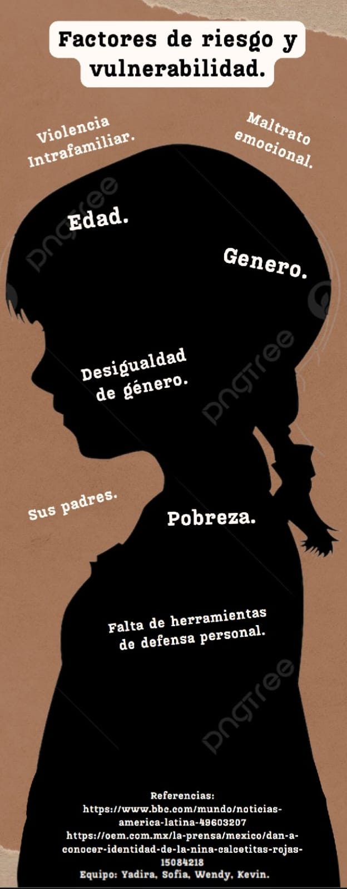

Factores de riesgo y vulnerabilidad

Los factores de riesgo y vulnerabilidad se entienden porque son elementos que afectan la salud y el bienestar de las personas y comunidades.
Factores de riesgo
- La probabilidad de que ocurra un evento
- Las consecuencias negativas de ese evento
- La combinación de la probabilidad del evento y sus consecuencias
Factores de vulnerabilidad
- Exposición: La relación deficiente entre el ambiente y las personas
- Fragilidad: El nivel de susceptibilidad de una población ante un peligro
- Resiliencia: La capacidad de respuesta y adaptación de una comunidad